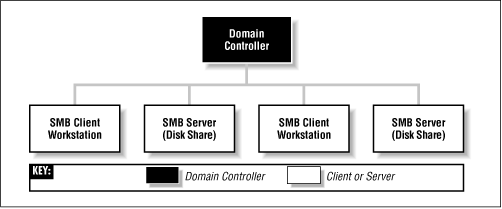
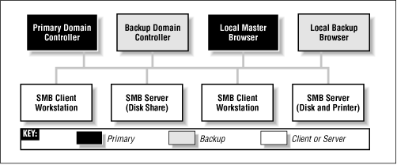
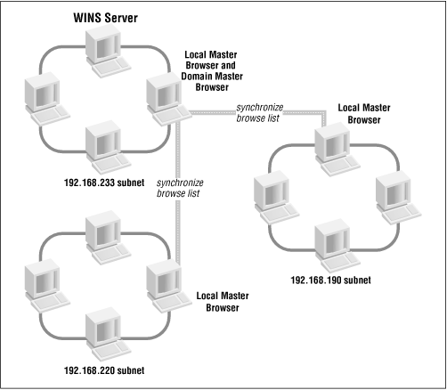

Using Samba
Robert Eckstein, David Collier-Brown, Peter Kelly1st Edition November 1999
1-56592-449-5, Order Number: 4495
416 pages, $34.95
|
|
Using SambaRobert Eckstein, David Collier-Brown, Peter Kelly1st Edition November 1999 1-56592-449-5, Order Number: 4495 416 pages, $34.95 |
1.4 Microsoft Implementations
With that amount of background, we can now talk about some of Microsoft's implementations of the preceding concepts in the CIFS/SMB networking world. And, as you might expect, there are some complex extensions to introduce as well.
1.4.1 Windows Domains
Recall that a workgroup is a collection of SMB computers that all reside on a subnet and subscribe to the same SMB group. A Windows domain goes a step further. It is a workgroup of SMB machines that has one addition: a server acting as a domain controller. You must have a domain controller in order to have a Windows domain.[6] Otherwise, it is only a workgroup. See Figure 1.11.
[6] Windows domains are called "Windows NT domains" by Microsoft because they assume that Windows NT machines will take the role of the domain controller. However, because Samba can perform this function as well, we'll simply call them "Windows domains" to avoid confusion.
Figure 1.11: A simple Windows domain
There are currently two separate protocols used by a domain controller (logon server): one for communicating with Windows 95/98 machines and one for communicating with Windows NT machines. While Samba currently implements the domain controller protocol for Windows 95/98 (which allows it to act as a domain controller for Windows 9 x machines), it still does not fully support the protocol for Windows NT computers. However, the Samba team promises that support for the Windows NT domain controller protocol is forthcoming in Samba 2.1.
Why all the difficulty? The protocol that Windows domain controllers use to communicate with their clients and other domain controllers is proprietary and has not been released by Microsoft. This has forced the Samba development team to reverse-engineer the domain controller protocol to see which codes perform specific tasks.
1.4.1.1 Domain controllers
The domain controller is the nerve center of a Windows domain, much like an NIS server is the nerve center of the Unix network information service. Domain controllers have a variety of responsibilities. One responsibility that you need to be concerned with is authentication. Authentication is the process of granting or denying a user access to a shared resource on another network machine, typically through the use of a password.
Each domain controller uses a security account manager (SAM) to maintain a list of username-password combinations. The domain controller then forms a central repository of passwords that are tied to usernames (one password per user), which is more efficient than each client machine maintaining hundreds of passwords for every network resource available.
On a Windows domain, when a non-authenticated client requests access to a server's shares, the server will turn around and ask the domain controller whether that user is authenticated. If it is, the server will establish a session connection with the access rights it has for that service and user. If not, the connection is denied. Once a user is authenticated by the domain controller, a special authenticated token will be returned to the client so that the user will not need to relogin to other resources on that domain. At this point, the user is considered "logged in" to the domain itself. See Figure 1.12.
Figure 1.12: Using a domain controller for authentication
1.4.1.2 Primary and backup domain controllers
Redundancy is a key idea behind a Windows domain. The domain controller that is currently active on a domain is called the primary domain controller (PDC). There can be one or more backup domain controllers (BDCs) in the domain as well, which will take over in the event that the primary domain controller fails or becomes inaccessible. BDCs frequently synchronize their SAM data with the primary domain controller so that, if the need arises, any one of them can perform DC services transparently without impacting its clients. Note that BDCs, however, have only read-only copies of the SAM; they can update their data only by synchronizing with a PDC. A server in a Windows domain can use the SAM of any primary or backup domain controller to authenticate a user who attempts to access its resources and logon to the domain.
Note that in many aspects, the behaviors of a Windows workgroup and a Windows domain overlap. This is not accidental since the concept of Windows domains did not evolve until Windows NT 3.5 was introduced, and Windows domains were forced to remain backwards compatible with the workgroups present in Windows for Workgroups 3.1. The key thing to remember here is that a Windows domain is simply a Windows workgroup with one or more domain controllers added.
Samba can function as a primary domain controller for Windows 95/98 machines without any problems. However, Samba 2.0 can act as a primary domain controller only for authentication purposes; it currently cannot assume any other PDC responsibilities. (By the time you read this, Samba 2.1 may be available so you can use Samba as a PDC for NT clients.) Also, because of the closed protocol used by Microsoft to synchronize SAM data, Samba currently cannot serve as a backup domain controller.
1.4.2 Browsing
Browsing is a high-level answer to the user question: "What machines are out there on the Windows network?" Note that there is no connection with a World Wide Web browser, apart from the general idea of "discovering what's there." And, like the Web, what's out there can change without warning.
Before browsing, users had to know the name of the specific computer they wanted to connect to on the network, and then manually enter a UNC such as the following into an application or file manager to access resources:
\\HYDRA\network\With browsing, however, you can examine the contents of a machine using a standard point-and-click GUI - in this case, the Network Neighborhood window in a Windows client.
1.4.2.1 Levels of browsing
As we hinted at the beginning of the chapter, there are actually two types of browsing that you will encounter in an SMB/CIFS network:
Let's look at the first one. On each Windows workgroup (or domain) subnet, one computer has the responsibility of maintaining a list of the machines that are currently accessible through the network. This computer is called the local master browser, and the list that it maintains is called the browse list. Machines on a subnet use the browse list in order to cut down on the amount of network traffic generated while browsing. Instead of each computer dynamically polling to determine a list of the currently available machines, the computer can simply query the local master browser to obtain a complete, up-to-date list.
To browse the actual resources on a machine, a user must connect to the specific machine; this information cannot be obtained from the browse list. Browsing the list of resources on a machine can be done by clicking on the machine's icon when it is presented in the Network Neighborhood in Windows 95/98 or NT. As you saw at the opening of the chapter, the machine will respond with a list of shared resources that can be accessed if that user is successfully authenticated.
Each of the servers on a Windows workgroup is required to announce its presence to the local master browser after it has registered a NetBIOS name, and (theoretically) announce that it is leaving the workgroup when it is shut down. It is the local master browser's responsibility to record what the servers have announced. Note that the local master browser is not necessarily the same machine as a NetBIOS name server (NBNS), which we discussed earlier.
WARNING: The Windows Network Neighborhood can behave oddly: until you select a particular machine to browse, the Network Neighborhood window may contain data that is not up-to-date. That means that the Network Neighborhood window can be showing machines that have crashed, or can be missing machines that haven't been noticed yet. Put succinctly, once you've selected a server and connected to it, you can be a lot more confident that the shares and printers really exist on the network.
Unlike the roles you've seen earlier, almost any Windows machine (NT Server, NT Workstation, 98, 95, or Windows 3.1 for Workgroups) can act as a local master browser. As with the domain controller, the local master browser can have one or more backup browsers on the local subnet that will take over in the event that the local master browser fails or becomes inaccessible. To ensure fluid operation, the local backup browsers will frequently synchronize their browse list with the local master browser. Let's update our Windows domain diagram to include both a local master and local backup browser. The result is shown in Figure 1.13.
Figure 1.13: A Windows domain with a local master and local backup browser
Here is how to calculate the minimum number of backup browsers that will be allocated on a workgroup:
If there are between 1 and 32 Windows NT workstations on the network, or between 1 and 16 Windows 95/98 machines on the network, the local master browser allocates one backup browser in addition to the local master browser.
If the number of Windows NT workstations falls between 33 and 64, or the number of Windows 95/98 workstations falls between 17 and 32, the local master browser allocates two backup browsers.
For each group of 32 NT workstations or 16 Windows 95/98 machines beyond this, the local master browser allocates another backup browser.
There is currently no upper limit on the number of backup browsers that can be allocated by the local master browser.
1.4.2.2 Browsing elections
Browsing is a critical aspect of any Windows workgroup. However, not everything runs perfectly on any network. For example, let's say that the Windows NT Server on the desk of a small company's CEO is the local master browser - that is, until he switches it off while plugging in his massage chair. At this point the Windows NT Workstation in the spare parts department might agree to take over the job. However, that computer is currently running a large, poorly written program that has brought its processor to its knees. The moral: browsing has to be very tolerant of servers coming and going. Because nearly every Windows machine can serve as a browser, there has to be a way of deciding at any time who will take on the job. This decision-making process is called an election.
An election algorithm is built into nearly all Windows operating systems such that they can each agree who is going to be a local master browser and who will be local backup browsers. An election can be forced at any time. For example, let's assume that the CEO has finished his massage and reboots his server. As the server comes online, it will announce its presence and an election will take place to see if the PC in the spare parts department should still be the master browser.
When an election is performed, each machine broadcasts via datagrams information about itself. This information includes the following:
These values determine which operating system has seniority and will fulfill the role of the local master browser. (Chapter 6, Users, Security, and Domains, describes the election process in more detail.) The architecture developed to achieve this is not elegant and has built-in security problems. While a browsing domain can be integrated with domain security, the election algorithm does not take into consideration which computers become browsers. Thus it is possible for any machine running a browser service to register itself as participating in the browsing election, and (after winning) being able to change the browse list. Nevertheless, browsing is a key feature of Windows networking and backwards compatibility requirements will ensure that it is in use for years to come.
1.4.3 Can a Windows Workgroup Span Multiple Subnets?
Yes, but most people who have done it have had their share of headaches. Spanning multiple subnets was not part of the initial design of Windows NT 3.5 or Windows for Workgroups. As a result, a Windows domain that spans two or more subnets is, in reality, the "gluing" together of two or more workgroups that share an identical name. The good news is that you can still use a primary domain controller to control authentication across each of the subnets. The bad news is that things are not as simple with browsing.
As mentioned previously, each subnet must have its own local master browser. When a Windows domain spans multiple subnets, a system administrator will have to assign one of the machines as the domain master browser. The domain master browser will keep a browse list for the entire Windows domain. This browse list is created by periodically synchronizing the browse lists of each of the local master browsers with the browse list of the domain master browser. After the synchronization, the local master browser and the domain master browser should contain identical entries. See Figure 1.14 for an illustration.
Figure 1.14: A workgroup that spans more than one subnet
Sound good? Well, it's not quite nirvana for the following reasons:
If it exists, a primary domain controller always plays the role of the domain master browser. By Microsoft design, the two always share the NetBIOS resource type <1B>, and (unfortunately) cannot be separated.
Windows 95/98 machines cannot become or even contact a domain master browser. The Samba group feels that this is a marketing decision from Microsoft that forces customers to have at least one Windows NT workstation (or Samba server) on each subnet of a multi-subnet workgroup.
Each subnet's local master browser continues to maintain the browse list for its subnet, for which it becomes authoritative. So if a computer wants to see a list of servers within its own subnet, the local master browser of that subnet will be queried. If a computer wants to see a list of servers outside the subnet, it can still go only as far as the local master browser. This works because, at appointed intervals, the authoritative browse list of a subnet's local master browser is synchronized with the domain master browser, which is synchronized with the local master browser of the other subnets in the domain. This is called browse list propagation.
Samba can act as a domain master browser on a Windows domain if required. In addition, it can also act as a local master browser for a Windows subnet, synchronizing its browse list with the domain master browser.
1.4.4 The Windows Internet Name Service (WINS)
The Windows Internet Name Service (WINS) is Microsoft's implementation of a NetBIOS name server (NBNS). As such, WINS inherits much of NetBIOS's characteristics. First, WINS is flat; you can only have machines named
fredor workgroups like CANADA or USA. In addition, WINS is dynamic: when a client first comes online, it is required to report its hostname, its address, and its workgroup to the local WINS server. This WINS server will retain the information so long as the client periodically refreshes its WINS registration, which indicates that it's still connected to the network. Note that WINS servers are not domain or workgroup specific; they can appear anywhere and serve anyone.Multiple WINS servers can be set to synchronize with each other after a specified amount of time. This allows entries for machines that come online and offline on the network to propagate from one WINS server to another. While in theory this seems efficient, it can quickly become cumbersome if there are several WINS servers covering a network. Because WINS services can cross multiple subnets (you'll either hardcode the address of a WINS server in each of your clients or obtain it via DHCP), it is often more efficient to have each Windows client, no matter how many Windows domains there are, point themselves to the same WINS server. That way, there will only be one authoritative WINS server with the correct information, instead of several WINS servers continually struggling to synchronize themselves with the most recent changes.
The currently active WINS server is known as the primary WINS server. You can also install a secondary WINS server, which will take over in the event that the primary WINS server fails or becomes inaccessible. Note that there is no election to determine which machine becomes a primary or backup WINS server - the choice of WINS servers is static and must be predetermined by the system administrator. Both the primary and any backup WINS servers will synchronize their address databases on a periodic basis.
In the Windows family of operating systems, only an NT Workstation or an NT server can serve as a WINS server. Samba can also function as a primary WINS server, but not a secondary WINS server.
1.4.5 What Can Samba Do?
Whew! Bet you never thought Microsoft networks would be that complex, did you? Now, let's wrap up by showing where Samba can help out. Table 1.6 summarizes which roles Samba can and cannot play in a Windows NT Domain or Windows workgroup. As you can see, because many of the NT domain protocols are proprietary and have not been documented by Microsoft, Samba cannot properly synchronize its data with a Microsoft server and cannot act as a backup in most roles. However, with version 2.0. x, Samba does have limited support for the primary domain controller's authentication protocols and is gaining more functionality every day.
Table 1.6: Samba Roles (as of 2.0.4b) Role
Can Perform?
File Server
Yes
Printer Server
Yes
Primary Domain Controller
Yes (Samba 2.1 or higher recommended)
Backup Domain Controller
No
Windows 95/98 Authentication
Yes
Local Master Browser
Yes
Local Backup Browser
No
Domain Master Browser
Yes
Primary WINS Server
Yes
Secondary WINS Server
No
 |
 |
 |
| 1.3 Getting Familiar with a SMB/CIFS Network |
 | 1.5 An Overview of the Samba Distribution |
© 1999, O'Reilly & Associates, Inc.